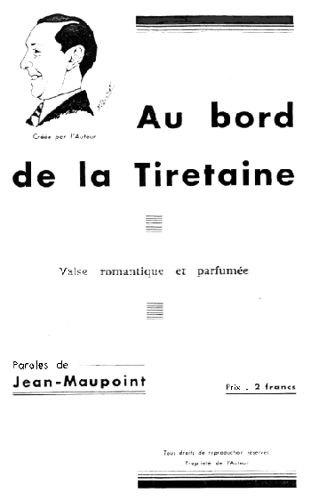

|
I
On a chanté les
beautés de Clermont
La place de Jaude, le Cours Sablon ;
Vercingétorix, Blaise Pascal
oui-dà,
La rue du Port, la rue des Gras ;
L'jardin Lecoq, son bassin, ses oiseaux,
La place Delille et ses grandes eaux…
Mais à Clermont il est un coin
rêvé
Que personne n'a chanté :
Refrain
Au bord de la Tiretaine,
Du côté d'l'abattoir…
Tous les jours de la s'maine,
Je vais respirer … la brise du soir !
C'est mieux que la Touraine
Et qu'lesbords de la Loire
Au bord de la Tiretaine,
A Clermont tous les soirs !
II
Les " Prisunics " font fureur à Clermont,
On vous dit :"c'n'est pas du bidon,
Pour une pièce d'dix francs, pas un sou de
plus
On peut se payer tout l'superflu. "
Pour ceux qu'on du pognon c'est épatant,
Moi j'ne possède pas même dix
francs…
Mais pour offrir à ma femme des bib'lots
J'me creuse pas l'ciboulot :
|
Refrain
Au bord de la Tiretaine
Je vais sans plus d'chichis,
Et là je trouve sans peine,
Un écumoire ou un vase de nuit…
On y trouve des cass'roles,
Des sacs en peau d'lézards.
La Tiretaine ma parole,
Dégote tous les bazards !
 III
Les gens rupins l'été font les
vill's d'eaux,
Vichy et Bourbon-l'Archambault ;
Y en a qui vont aux plages de grand renom,
Deauville, La Baule ou Arcachon.
Mais faut êtr' riche pour s'payer ces trucs
là
C'est bon pour les " fils à papa "…
Pour bien moins cher quand reviennent les
chaleurs,
J'vais faire mon p'tit baigneur :
|
Refrain
Au bord de la Tiretaine,
Vêtu d'mon cal'çon noir,
Je nage à perdre haleine
Au doux zéphir de la brise du soir…
Mes yeux dans l'eau se perdent,
Je respire la marée…
On s'croirait dans la mer...e !
Dans la Tiretaine l'été.
IV
Dans les journaux nous lisons tous les jours
Des dram's d'argent des dram's d'amour :
Monsieur Machin s'est fait sauter l'caisson,
Truc dans la Seine a fait l'plongeon…
Mais des pêcheurs qui venaient à
passer
Se j'tèrent à l'eau et l'ont
sauvé.
Moi quand d'la vie je voudrai en finir,
Pour être sûr de mourir …
Refrain
Dans le lit d'la Tiretaine
Je me laiss'rai glisser,
J'aurai l'âme sereine
Sachant que la mort sera vite arrivée…
Dans les eaux de la Seine
On est long à s'noyer ;
Tandis qu'dans la Tiretaine…
On est vite asphyxié ! ! !
|